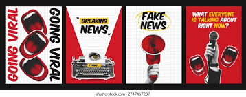
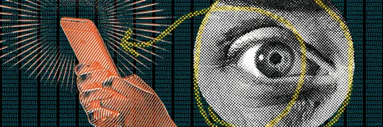
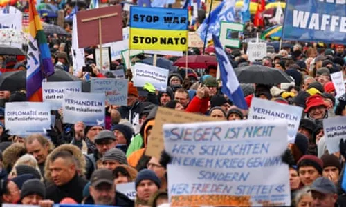
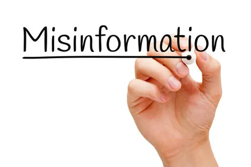
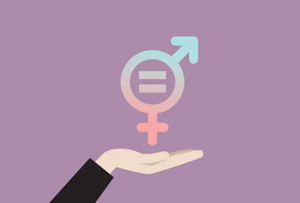
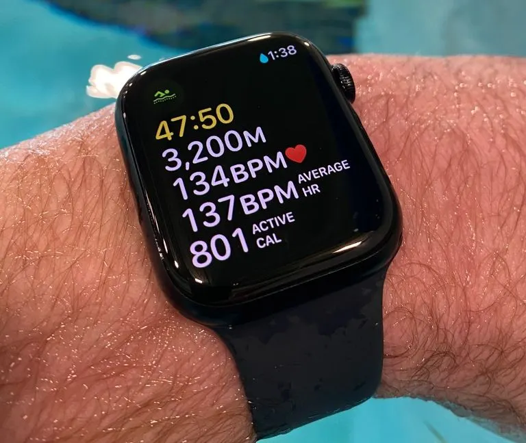
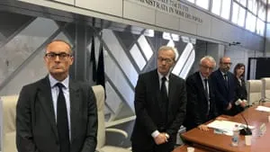

Libertà di Espressione e Sicurezza: tra mondo reale e virtuale
Introduzione
La parola non è mai neutrale.
Chi ha il controllo dell'informazione ha il potere di influenzare le menti delle persone.
Nel secolo scorso, i regimi totalitari utilizzavano ministeri e direttive per controllare l'informazione.
Al giorno d'oggi, la lotta per il controllo dell'informazione si svolge su un terreno diverso, ovvero su algoritmi, piattaforme e bit, ma i meccanismi psicologici che stanno alla base di questo controllo sono gli stessi.
In questo articolo, cercheremo di ripercorrere la storia della propaganda nel Novecento e di come essa sia collegata alle notizie false di oggi.
Vogliamo anche fornire gli strumenti necessari per difendersi da queste manipolazioni e collegare la sicurezza informatica alla responsabilità etica di chi progetta e gestisce i sistemi digitali.
Il nostro obiettivo è quello di capire come la propaganda e le notizie false possano essere utilizzate per influenzare le menti delle persone e come possiamo proteggerci da queste manipolazioni.
01 Propaganda e censura nel Novecento Storia
I regimi totalitari del Novecento hanno dimostrato che controllare l'informazione
significa controllare la realtà percepita dai cittadini. Tre modelli a confronto.
Italia fascista, MinCulPop (1937)
Il Ministero della Cultura Popolare emetteva ogni giorno alle redazioni le cosiddette
veline: istruzioni precise su cosa pubblicare, come titolare e quali notizie tacere.
La vaghezza era strategica — non vietava esplicitamente, ma induceva i direttori all'autocensura.
Nel 1941 fu ordinato di non parlare delle lunghe file davanti ai negozi di alimentari.
Il silenzio era propaganda: non una menzogna diretta, ma la cancellazione della realtà scomoda.
Germania nazista, Reichsministerium (1933)
Il ministero di Goebbels controllava stampa, radio, cinema e arte.
Goebbels teorizzò la propaganda come disciplina scientifica: non si trattava di convincere,
ma di impregnare, far assorbire inconsapevolmente i messaggi del regime.
Il principio della ripetizione è alla base dell'effetto di mera esposizione:
più una cosa viene ripetuta, più viene percepita come vera.
URSS stalinista, Unione degli Scrittori (1932)
Lo Statuto del 1934 impose il realismo socialista come unico stile artistico ammesso.
A differenza del fascismo, che lavorava per sottrazione, il modello sovietico era prescrittivo:
imponeva per legge cosa creare e come rimodellare la mente dei cittadini.
Gli scrittori venivano definiti "ingegneri delle anime".
Manzoni e il meccanismo dell'untore
Nel 1630, durante la peste di Milano, bastò il gesto di Guglielmo Piazza che sfiorò un muro
per scatenare una psicosi collettiva. Nella Storia della Colonna Infame, Manzoni analizza
come i giudici condannassero innocenti non perché non conoscessero la verità, ma perché
vollero credere a una menzogna che soddisfaceva la rabbia del pubblico.
Questo è il bias di conferma in azione: accettare solo gli input che confermano
le nostre convinzioni preesistenti.
Milano · 1630
Social Media · Oggi
Piazza sfiora un muro
Una persona ripresa al parco
«È un untore»
«È un ladro di bambini»
Nessuno verifica per paura
Migliaia di condivisioni in poche ore
Condanna sommaria
Aggressioni, minacce, licenziamento
La verità emerge troppo tardi
La smentita non raggiunge chi ha già condiviso
La conquista fragile della libertà di stampa
Dove c'è censura, nasce sempre resistenza. Durante l'occupazione nazifascista (1943–45)
oltre 500 testate clandestine furono stampate in Italia a rischio della vita.
Teresio Olivelli, fondatore de Il Ribelle, fu arrestato e morì nel lager di Hersbruck
il 17 gennaio 1945. L'informazione come atto morale e politico.
Nel 1971 i Pentagon Papers dimostrarono come Nixon avesse mentito al Congresso sulla guerra
del Vietnam. La Corte Suprema decise in favore della stampa con una sentenza storica:
«la stampa deve servire i governati, non i governatori».
Oggi, secondo l'indice RSF (Reporters Sans Frontières), solo il 26% della popolazione mondiale
vive in paesi con stampa libera. L'Italia occupa una posizione problematica a causa di querele
temerarie (SLAPP), concentrazione editoriale e pressioni della criminalità organizzata.
02 Fake news e disinformazione Italiano

La disinformazione non è un fenomeno nuovo: cambia il mezzo, non il meccanismo.
Goebbels usava la radio, oggi si usano i social network, ma i bias cognitivi sfruttati
sono gli stessi che Manzoni aveva già descritto nel 1630.
Tecniche di disinformazione
Notizia completamente falsa
Creata intenzionalmente per ingannare. Si diffonde perché fa leva su emozioni forti
come paura, rabbia o indignazione.zbr> Un esempio reale: la falsa notizia che i cuffie
wireless riducano del 40% la concentrazione nei teenager,citando un inesistente
"European Institute of Neurotechnology". Il linguaggio tecnico e il nome credibile
dell'istituto abbassano il senso critico del lettore.
Titolo fuorviante
Il fatto di partenza è reale, ma il titolo lo distorce. "Lo zucchero aumenta i rischi
cardiovascolari" diventa "Lo zucchero uccide, lo dice la scienza". Chi legge solo il
titolo riceve un'informazione sbagliata.
Decontestualizzazione delle immagini
Foto o video reali vengono associati a eventi diversi da quelli originali.
Durante l'alluvione in Emilia-Romagna del 2023 circolarono immagini di alluvioni avvenute
anni prima in altri paesi. Per verificare: Google Lens e TinEye permettono la ricerca
inversa delle immagini.
Fonti inesistenti
L'articolo cita "uno studio di Harvard" senza indicare autori, anno o rivista.
La citazione falsa sfrutta l'autorità di chi non ha mai detto nulla.
Per verificare: Google Scholar, Wikiquote, Pagella Politica, Snopes.
Meccanismi psicologici
Meccanismo
Come funziona
Esempio
Confirmation bias
Tendiamo a credere alle informazioni che confermano ciò che già pensiamo
Chi diffida della tecnologia crede subito a studi che la demonizzano
Fear appeal
La notizia crea allarme emotivo, aumentando condivisioni e commenti
"Le cuffie danneggiano i tuoi figli" genera panico nei genitori
Authority bias
Un nome credibile abbassa la soglia critica anche senza verifica
"Secondo l'European Institute of Neurotechnology..."
Effetto di mera esposizione
Più una cosa viene ripetuta, più viene percepita come vera
Il principio di Goebbels, oggi applicato dagli algoritmi
Echo chamber e filter bubble
Gli algoritmi dei social mostrano solo contenuti simili a quelli già consumati,
creando una bolla dove si sente soltanto chi la pensa come noi.
Questo amplifica i bias cognitivi: non si tratta più di convincere qualcuno,
ma di rafforzare convinzioni preesistenti fino all'estremizzazione.
Strumenti di fact-checking
Difendersi dalla disinformazione richiede metodo, non solo buona volontà.
Strumenti utili: Pagella Politica e Snopes per verificare
dichiarazioni e notizie, Google Scholar per verificare l'esistenza di studi
scientifici citati, Google Lens / TinEye per la ricerca inversa delle immagini.
03 Difendere l'informazione: cybersicurezza Sistemi e Reti
La disinformazione non cambia solo le idee: viene usata anche dai criminali informatici
per attaccare la sicurezza delle persone. Il meccanismo psicologico è lo stesso:
sfruttare le emozioni per disarmare il pensiero critico.
La triade CIA
Pilastro
Significato
Applicazione
C Confidentiality
Riservatezza
Le informazioni sono accessibili solo a chi ne ha diritto. Garantita da crittografia e autenticazione.
I Integrity
Integrità
Le informazioni non vengono alterate da malintenzionati. Collegamento diretto con la lotta alle fake news.
A Availability
Disponibilità
Le informazioni devono essere sempre fruibili, resistendo agli attacchi che vogliono silenziare la comunicazione.
Phishing
Una sorta di "notizia falsa" inviata via email o SMS: il messaggio finge di arrivare
dalla banca e crea urgenza artificiale ("Conto bloccato, clicca qui").
Presi dal panico, inseriamo le credenziali e le consegniamo ai criminali.
È esattamente il meccanismo del fear appeal usato nelle fake news.
Contromisure: autenticazione a due fattori (2FA), non cliccare link in messaggi urgenti non richiesti, verificare sempre il mittente.
Malware
Programmi dannosi come virus, trojan, spyware e ransomware che si installano nel dispositivo
tramite link o allegati. Possono spiarci, rubare dati o cifrare i file chiedendo un riscatto.
Contromisure: antivirus aggiornato, non aprire allegati sospetti, backup regolari dei dati.
Crittografia e firewall
La cifratura garantisce che solo il destinatario legittimo possa leggere le informazioni:
le chat crittografate end-to-end sono il moderno equivalente dei giornali clandestini della Resistenza.
I firewall filtrano il traffico di rete bloccando connessioni non autorizzate.
Le VPN permettono di aggirare la censura governativa e proteggere la propria navigazione.
04 Privacy e protezione dei dati GPOI
Per costruire fake news personalizzate o lanciare attacchi di phishing mirati,
i malintenzionati hanno bisogno di una cosa sola: i nostri dati personali.
Un data breach non è solo un danno tecnico: è la perdita di controllo sulla propria
identità digitale, con conseguenze reputazionali, economiche e sulla sicurezza personale.
Data breach: cos'è e perché fa paura
Un data breach è una violazione della sicurezza che porta alla divulgazione non autorizzata
di dati personali. Quando i dati di milioni di utenti finiscono nelle mani sbagliate,
ogni singola persona diventa bersaglio potenziale di phishing mirato, furto d'identità
o ricatti digitali. Il danno economico e reputazionale per le aziende può essere devastante.
Il GDPR, General Data Protection Regulation
Il GDPR (Regolamento UE 2016/679) è la risposta europea alla minaccia dei dati.
I suoi principi fondamentali:
Controllo all'utente: ogni cittadino ha il controllo totale sui propri dati. Le aziende non possono usarli senza autorizzazione esplicita.
Consenso chiaro: il consenso deve essere libero e inequivocabile. I banner con caselle già spuntate non sono consenso valido.
Diritto all'oblio: è possibile chiedere la cancellazione definitiva dei propri dati quando non sono più necessari.
Notifica dei data breach: se un'azienda perde dati degli utenti, ha l'obbligo di avvisare le autorità entro 72 ore.
Privacy by Design: la protezione dei dati deve essere integrata nei sistemi sin dalla progettazione, non aggiunta in seguito.
05 L'etica del tecnologo

La storia ci insegna che la libertà è un diritto fragile.
Nel Novecento i dittatori la sopprimevano con la forza e la censura.
Oggi il rischio è più sottile: veniamo manipolati attraverso l'uso invisibile dei nostri
stessi dati, algoritmi che costruiscono bolle di realtà e fake news che si diffondono
alla velocità di un clic.
Il passaggio dai vecchi censori di Stato (il MinCulPop del '30) ai moderni "censori
algoritmici" non è una rottura, è una continuità. Cambia lo strumento, non il potere.
Come futuri professionisti dell'informatica abbiamo una responsabilità doppia:
come cittadini dobbiamo verificare le fonti e proteggere i nostri dati;
come tecnici non dobbiamo costruire sistemi che sfruttano le debolezze cognitive degli utenti.
Conoscere la storia per riconoscere la propaganda
Verificare le fonti prima di condividere qualsiasi contenuto
Proteggere la propria identità digitale
Progettare tecnologie rispettose delle persone
06 Sorveglianza, spionaggio digitale e pace TPSIT
In TPSIT sono stati analizzati due episodi della trasmissione PresaDiretta che
affrontano il lato oscuro delle tecnologie digitali: la sorveglianza di massa e il ruolo
delle armi tecnologiche nei conflitti contemporanei.
Armi di controllo di massa (17/10/2022)
Il primo episodio entra nel mercato delle tecnologie di controllo: robot, droni, scanner,
visori, sistemi di intelligenza artificiale e riconoscimento biometrico.
Un settore che cresce tra il 7 e il 9% annuo e fattura tra i 65 e i 68 miliardi di euro,
sempre più integrato nelle politiche di sorveglianza degli Stati.
Il caso più emblematico riguarda le frontiere europee: elicotteri con termocamere che
tracciano persone fino a 10 km di distanza, apparecchiature che rilevano battiti cardiaci
e respirazione, milioni di euro investiti per trasformare i confini dell'Unione Europea
in una barriera tecnologica impenetrabile lungo la rotta balcanica.
Sul fronte dei dati personali, l'episodio porta alla luce i rischi legati alla raccolta
massiva di informazioni biometriche da parte delle agenzie europee.
Milioni di dati su cittadini europei custoditi in database centralizzati pongono domande
fondamentali: chi li controlla? Come vengono usati? Le leggi esistenti,tra cui il GDPR,
sono sufficienti a tutelarci?
Il caso Pegasus chiude il quadro: lo spyware israeliano, nato ufficialmente
per combattere terrorismo e criminalità organizzata, è stato usato da governi per spiare
giornalisti, attivisti e oppositori politici. Un software che si installa nel telefono
senza lasciare traccia e ne prende il controllo totale, la versione moderna delle
veline fasciste, aggiornata all'era digitale.
Tecnologia
Uso dichiarato
Rischio concreto
Riconoscimento biometrico
Sicurezza alle frontiere
Sorveglianza di massa dei cittadini
Termocamere / sensori cardiaci
Individuare migranti irregolari
Violazione della dignità e del diritto d'asilo
Spyware (Pegasus)
Contrasto al terrorismo
Spionaggio politico e repressione del dissenso
Database biometrici centralizzati
Gestione dell'identità digitale
Perdita di controllo sui dati personali
Diamo voce alla pace (28/02/2022)

Il secondo episodio è dedicato alla guerra in Ucraina, scoppiata il 24 febbraio 2022
con l'invasione russa. Putin ha giustificato l'attacco sostenendo che l'Ucraina non sia
uno stato sovrano e che il suo avvicinamento all'Occidente costituisca una minaccia.
Ma la guerra era l'unica opzione possibile?
L'episodio mette al centro una domanda scomoda: nel mondo esistono ancora circa
13.000 testate nucleari distribuite tra troppi paesi, non sempre affidabili.
La corsa agli armamenti non si è mai fermata, e le stesse tecnologie di sorveglianza
e controllo descritte nel primo episodio alimentano questa escalation.
Il collegamento con il tema dell'UDA è diretto: la propaganda di guerra sfrutta
esattamente gli stessi meccanismi delle fake news, fear appeal, narrativa del nemico,
informazione controllata. In Russia i media indipendenti sono stati silenziati,
la parola "guerra" è stata vietata per legge, sostituita con "operazione militare speciale".
È il MinCulPop del 2022.
Tecnologia e responsabilità
Questi due episodi confermano che le tecnologie informatiche non sono mai neutrali.
Chi le progetta, chi le vende e chi le usa compie scelte politiche ed etiche.
Come futuri tecnici informatici, la domanda non è solo "come funziona?" ma
"a cosa serve?" e "a chi dà potere?".
Le sezioni seguenti trattano argomenti di Educazione Civica svolti nel trimestre
nelle materie di Inglese, Religione e Scienze Motorie. Non fanno parte dell'UDA del pentamestre
ma costituiscono parte integrante del percorso di Educazione Civica del quinto anno.
07 Fake news: prospettiva in inglese Inglese

The topic of fake news was also addressed in English, focusing on how misinformation
spreads across digital platforms and what tools exist to counter it.
A case study: wireless headphones and concentration
One of the most instructive examples analyzed is the fake article claiming that daily use
of wireless headphones reduces teenagers' concentration ability by 40%, attributed to a
non-existent "European Institute of Neurotechnology."
The article works precisely because it combines several manipulation techniques at once:
technical language that sounds credible, a plausible institutional name, a vulnerable
target group (teenagers), and a corporate conspiracy narrative ("manufacturers are hiding
critical data"). Each element is designed to bypass rational evaluation.
Why fake news spreads
Mechanism
Effect
Confirmation bias
People believe what confirms their existing fears about technology
Fear appeal
Emotional alarm about children's health increases shares and engagement
Authority bias
A credible-sounding institution name reduces critical thinking
Social amplification
Algorithms show content to those most likely to share it further
How to recognize and counter fake news
Before sharing any piece of information, it is worth asking: Who published this? Can the
source be verified independently? Does the headline match the actual content? Does it exist
on fact-checking platforms such as Snopes or Pagella Politica?
Critical thinking is not a natural reflex, it must be trained deliberately.
08 Uguaglianza di genere Religione

In Religione è stato affrontato il tema dell'uguaglianza di genere, analizzato
sia dal punto di vista etico e valoriale che nella prospettiva della dottrina sociale
della Chiesa.
Il principio di uguale dignità
Il punto di partenza è il riconoscimento che ogni persona, indipendentemente dal sesso,
possiede una dignità intrinseca e inalienabile. Questo principio, condiviso sia dalla
tradizione religiosa che dalla Dichiarazione Universale dei Diritti Umani (1948),
costituisce il fondamento di qualsiasi riflessione sull'uguaglianza.
Discriminazione di genere e mondo digitale
Il tema si intreccia con la dimensione digitale affrontata nell'UDA: le piattaforme
social amplificano stereotipi di genere attraverso algoritmi che mostrano contenuti
polarizzanti, e il cyberbullismo colpisce in modo sproporzionato le donne e le ragazze.
Proteggere la libertà di espressione nel mondo virtuale significa anche contrastare
l'hate speech basato sul genere.
Una riflessione personale
L'uguaglianza di genere non è un obiettivo raggiunto: è un processo continuo.
Come studente di informatica, il collegamento con il mondo tecnologico è immediato:
il settore IT è ancora fortemente sbilanciato verso il genere maschile, e costruire
ambienti digitali inclusivi è una responsabilità tecnica oltre che etica.
09 Tecnologia e sport Scienze Motorie
In Scienze Motorie è stato affrontato il tema della tecnologia applicata allo sport,
analizzando vantaggi, limiti e implicazioni etiche degli strumenti digitali nel contesto
dell'attività fisica.
Sensori indossabili

Smartwatch, fasce cardio e dispositivi simili raccolgono dati in tempo reale durante
l'allenamento: battiti, distanza, calorie, livello di forma fisica.
Sono strumenti utili per monitorare i progressi e personalizzare gli allenamenti,
sia in ambito amatoriale che per i tecnici sportivi.
Il limite principale non è tecnico ma etico: se non si gestisce correttamente la privacy,
i dati biometrici raccolti possono finire nelle mani sbagliate.
I dati sul nostro corpo sono dati personali sensibili, tutelati dal GDPR.
Software per l'analisi del movimento
Telecamere e applicazioni dedicata registrano e analizzano i gesti sportivi, permettendo
di identificare errori tecnici e prevenire infortuni. Sono strumenti preziosi per allenatori
e atleti, ma richiedono competenza nell'uso e attenzione alla privacy delle persone riprese.
Tecnologia come mezzo, non come fine
La conclusione che emerge è coerente con il filo conduttore dell'intero percorso:
la tecnologia è uno strumento potente ma neutro. il suo valore dipende dall'uso
che se ne fa. Nello sport come nella comunicazione digitale, serve responsabilità,
senso critico e rispetto per le persone.
10 Educazione alla legalità: Camere Penali Progetto Camere Penali

Nell'ambito del progetto promosso dall'Unione delle Camere Penali Italiane (UCPI) e dal
Ministero dell'Istruzione e del Merito (MIM), la classe 5DFM ha partecipato a un percorso
di educazione alla legalità e ai principi costituzionali afferenti al processo penale.
L'esperienza
Una parte della classe ha avuto l'opportunità di assistere direttamente a delle udienze
presso il Tribunale di Ancona. Osservare dal vivo il funzionamento dell'aula di giustizia,
la disposizione delle parti, i ruoli del giudice, del pubblico ministero e della difesa,
i tempi e i rituali del processo, ha restituito una dimensione concreta a concetti che
difficilmente emergono dallo studio teorico.
Cosa mi ha lasciato
Il racconto di chi ha partecipato ha messo in luce quanto il processo penale sia,
prima di tutto, una garanzia per il cittadino. Il principio di presunzione di innocenza,
il diritto a una difesa effettiva, la pubblicità del dibattimento: non sono formule
astratte della Costituzione, ma meccanismi concreti che si vedono in azione in un'aula.
Il ruolo dell'avvocato difensore, spesso percepito dall'opinione pubblica con diffidenza,
si rivela invece fondamentale: senza una difesa forte, non esiste un processo equo.
Il collegamento con la libertà di espressione
Il processo penale è uno dei luoghi in cui la libertà di espressione incontra la legge:
il diritto di difesa, la pubblicità del dibattimento e la presunzione di innocenza
sono garanzie costituzionali che proteggono i cittadini dallo strapotere dello Stato,
esattamente come la libertà di stampa li protegge dalla propaganda.